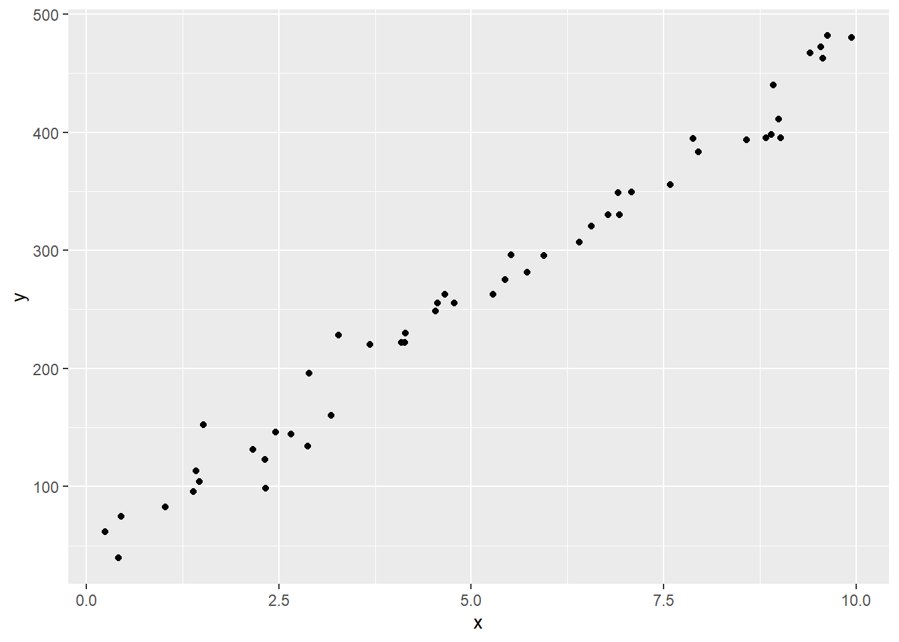
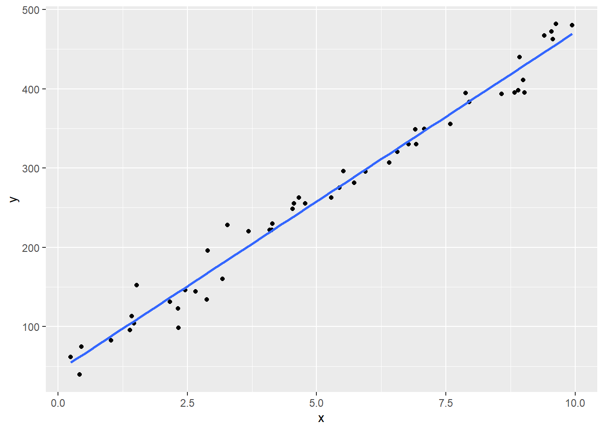
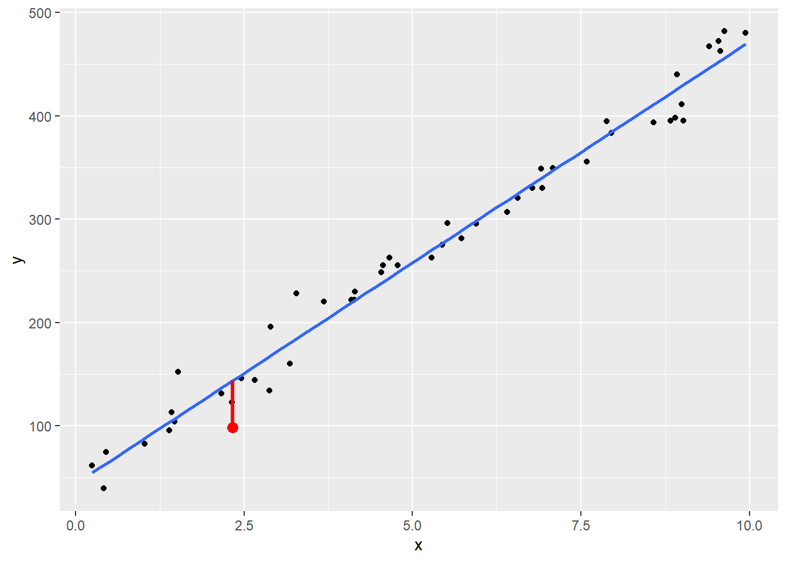
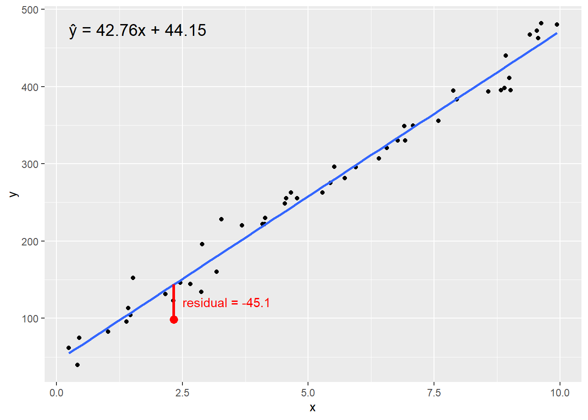

Lineær regression
Hvad er det nu det er?
Vi ved ikke hvad x og y er. Pointen er at det ser ud til at der er en lineær sammenhæng mellem x og y. Når x stiger, stiger y også. Hvordan ser den lineære sammenhæng ud?
En ret linie
Her har vi lagt en ret linie ind. Men er det den bedste? (spoiler: Det er den)
── Attaching core tidyverse packages ──────────────────────── tidyverse 2.0.0 ──
✔ dplyr 1.2.1 ✔ readr 2.2.0
✔ forcats 1.0.1 ✔ stringr 1.6.0
✔ lubridate 1.9.5 ✔ tibble 3.3.1
✔ purrr 1.2.2 ✔ tidyr 1.3.2
── Conflicts ────────────────────────────────────────── tidyverse_conflicts() ──
✖ dplyr::filter() masks stats::filter()
✖ dplyr::lag() masks stats::lag()
ℹ Use the conflicted package (<http://conflicted.r-lib.org/>) to force all conflicts to become errors
`geom_smooth()` using formula = 'y ~ x'
Den beskriver en sammenhæng mellem x og y.
Lineær regression
I husker måske at en ret linie kan beskrives som
\(y = ax + b\)
Opgaven er altså at finde den rette linie, beskrevet ved a og b, der bedst beskriver sammenhængen mellem x og y.
Hvordan gør vi det?
Lineær regression
Linien fortæller: Hvis x har en bestemt værdi, hvilken værdi burde y så have?
`geom_smooth()` using formula = 'y ~ x'
. . .
Den værdi har y ikke. Forskellen kalder vi “residualen”.
Lineær regression
Alle punkterne har en residual.
En afvigelse fra den “sande” værdi.
Vi vil derfor skrive at:
\(y = ax + b + \epsilon\)
Den “bedste” linie er den hvor summen af residualerne, \(\epsilon\), er mindst mulig.
. . .
Der er en del sjusk i notationen både her, overalt på nettet og i eksamensopgaver, hvor vi skriver \(y = ax + b\). Det er ikke korrekt, for \(\epsilon\) mangler.
. . .
\(\hat{y} = ax + b\) er mere korrekt.
Lineær regression
`geom_smooth()` using formula = 'y ~ x'
Læg mærke til at residualen er negativ for det med rødt markerede punkt.
Andre punkter har en positiv værdi.
Hvad sker der hvis vi lægger dem alle sammen sammen?
Vi risikerer at resultatet bliver 0 - fordi summen af positive og negative tal kan risikere at blive 0.
Lineær regression
Så vi kvadrerer residualerne og lægger dem sammen.
. . .
Den sum forsøger vi at minimere ved at vælge a og b.
. . .
Derfor kalder vi også metoden for “mindste kvadraters metode”. Eller OLS - Ordinary Least Squares.
. . .
Det kunne man gøre med papir, blyant, lineal og lommeregner. Det er der ingen der gider
. . .
Så vi bruger funktionen lm()
Det generelle eksempel
Hvis vi vil finde ud af hvordan x beskriver y, skriver vi:
lm(y ~ x, data = df)
Læs det som: y som funktion af x.
Den giver et output:
lm(y ~ x, data = data)
Call:
lm(formula = y ~ x, data = data)
Coefficients:
(Intercept) x
44.15 42.76 De enkelte dele
lm(y ~ x, data = data)y er den afhængige variabel, x er den uafhængige.
Eller:
y er responsvariabel, og x er forklarende.
Der gemmer sig mere information!
Outputtet
Gem resultatet og kør funktionen “summary” på det gemte resultat:
lineær_model <- lm(y ~ x, data = data)
summary(lineær_model)
Call:
lm(formula = y ~ x, data = data)
Residuals:
Min 1Q Median 3Q Max
-45.116 -11.157 -1.313 10.985 43.723
Coefficients:
Estimate Std. Error t value Pr(>|t|)
(Intercept) 44.153 5.442 8.113 1.49e-10 ***
x 42.764 0.913 46.840 < 2e-16 ***
---
Signif. codes: 0 '***' 0.001 '**' 0.01 '*' 0.05 '.' 0.1 ' ' 1
Residual standard error: 18.81 on 48 degrees of freedom
Multiple R-squared: 0.9786, Adjusted R-squared: 0.9781
F-statistic: 2194 on 1 and 48 DF, p-value: < 2.2e-16Hyppig eksamensopgave: Her er output af det I burde have svaret i opgave 1a). Hvilken regression er der tale om? Fortolk resultaterne.
Så lad os kigge på de enkelte dele, så vi ved hvad de dækker over.
Call og Residuals
Call:
lm(formula = y ~ x, data = data)
Residuals:
Min 1Q Median 3Q Max
-45.116 -11.157 -1.313 10.985 43.723
Coefficients:
Estimate Std. Error t value Pr(>|t|)
(Intercept) 44.153 5.442 8.113 1.49e-10 ***
x 42.764 0.913 46.840 < 2e-16 ***
---
Signif. codes: 0 '***' 0.001 '**' 0.01 '*' 0.05 '.' 0.1 ' ' 1
Residual standard error: 18.81 on 48 degrees of freedom
Multiple R-squared: 0.9786, Adjusted R-squared: 0.9781
F-statistic: 2194 on 1 and 48 DF, p-value: < 2.2e-16Call er den funktion vi faktisk kørte for at få dette resultat. Den er som regel redigeret væk.
Residuals er summary statistics på residualerne. Vi bruger dem til at tjekke modellen. De er som regel også redigeret væk.
Koefficienter - Estimate
Call:
lm(formula = y ~ x, data = data)
Residuals:
Min 1Q Median 3Q Max
-45.116 -11.157 -1.313 10.985 43.723
Coefficients:
Estimate Std. Error t value Pr(>|t|)
(Intercept) 44.153 5.442 8.113 1.49e-10 ***
x 42.764 0.913 46.840 < 2e-16 ***
---
Signif. codes: 0 '***' 0.001 '**' 0.01 '*' 0.05 '.' 0.1 ' ' 1
Residual standard error: 18.81 on 48 degrees of freedom
Multiple R-squared: 0.9786, Adjusted R-squared: 0.9781
F-statistic: 2194 on 1 and 48 DF, p-value: < 2.2e-16Estimaterne er koefficenterne i y = ax+b. Intercept er b, x er koefficienten der ganges på x værdien, her altså a.
Den model vi har bygget er altså:
\(\hat{y} = 44.153 + 42.764x\)
Koefficienter - Std. error
Call:
lm(formula = y ~ x, data = data)
Residuals:
Min 1Q Median 3Q Max
-45.116 -11.157 -1.313 10.985 43.723
Coefficients:
Estimate Std. Error t value Pr(>|t|)
(Intercept) 44.153 5.442 8.113 1.49e-10 ***
x 42.764 0.913 46.840 < 2e-16 ***
---
Signif. codes: 0 '***' 0.001 '**' 0.01 '*' 0.05 '.' 0.1 ' ' 1
Residual standard error: 18.81 on 48 degrees of freedom
Multiple R-squared: 0.9786, Adjusted R-squared: 0.9781
F-statistic: 2194 on 1 and 48 DF, p-value: < 2.2e-16Error er standardfejlen (i familie med SEM her dog ikke standarderror på “mean” men SE på estimatet)
\(H_0\) for hvert af estimaterne er at “Estimate = 0”. Det spørgsmål vi som regel forsøger at finde svar på er - hvor meget betyder “x” for værdien af “y”. Eller: “Hvis alder stiger med 1 år, hvor mange mmHg stiger det systoliske blodtryk”.
Hvis estimatet på den koefficient er 0 - har alder så betydning for blodtrykket? Hvis koefficienten i virkeligheden er 0 - så har alder ingen betydning for blodtrykket.
Koefficienter - t value
Call:
lm(formula = y ~ x, data = data)
Residuals:
Min 1Q Median 3Q Max
-45.116 -11.157 -1.313 10.985 43.723
Coefficients:
Estimate Std. Error t value Pr(>|t|)
(Intercept) 44.153 5.442 8.113 1.49e-10 ***
x 42.764 0.913 46.840 < 2e-16 ***
---
Signif. codes: 0 '***' 0.001 '**' 0.01 '*' 0.05 '.' 0.1 ' ' 1
Residual standard error: 18.81 on 48 degrees of freedom
Multiple R-squared: 0.9786, Adjusted R-squared: 0.9781
F-statistic: 2194 on 1 and 48 DF, p-value: < 2.2e-16t value er testværdien vi bruger til at afgøre om vi kan afvise \(H_0\). Hvad viser den?
Hvor mange “Std. Error” ligger vores estimat fra 0?
Vi finder den ved at dividere “Estimate” med “Std. Error”
I kommer til at støde på to typer model- eller regressions output. (multipel) lineær og logistisk. At der står “t value” fortæller os at det er en lineær regression.
Koefficienter - p-value
Call:
lm(formula = y ~ x, data = data)
Residuals:
Min 1Q Median 3Q Max
-45.116 -11.157 -1.313 10.985 43.723
Coefficients:
Estimate Std. Error t value Pr(>|t|)
(Intercept) 44.153 5.442 8.113 1.49e-10 ***
x 42.764 0.913 46.840 < 2e-16 ***
---
Signif. codes: 0 '***' 0.001 '**' 0.01 '*' 0.05 '.' 0.1 ' ' 1
Residual standard error: 18.81 on 48 degrees of freedom
Multiple R-squared: 0.9786, Adjusted R-squared: 0.9781
F-statistic: 2194 on 1 and 48 DF, p-value: < 2.2e-16Pr(>|t|) er p-værdien: Risikoen for at vi afviser \(H_0\), selvom den faktisk er sand. Altså at vi afviser at estimatet i virkeligheden er 0 - og accepterer den alternative hypotese, at estimatet ikke er 0 (og at x derfor faktisk påvirker y).
Typisk: Større eller mindre end 0.05.
Tæt sammenhæng mellem t-value og p-value!
Populær ting i eksamensopgaver
De der formulerer eksamensopgaver synes det er supersjovt at redigere en værdi ud af outputtet af en model og stille et spørgsmål der kræver at I har netop den værdi.
Husk: \(\text{t value} = \frac{\text{Estimate}}{\text{Std. Error}}\)
p-værdien kan vi ikke beregne direkte. Mangler den i opgaven, bruger vi testværdien:
\(\frac{\text{Estimate}}{\text{Std. Error}}\)
og ser om den er større eller mindre end 1.96 (hvis vi tester på et 5% niveau)
. . .
Vi kan faktisk godt beregne p-værdien. Den er givet ved: 2*(1-pt(abs(t value), df))
pt er pnorm() blot for t-fordelingen i stedet for normalfordelingen, og df er antallet af frihedsgrader i modellen.
Men det behøver vi ikke - test-værdien er rigeligt.
Resten
Call:
lm(formula = y ~ x, data = data)
Residuals:
Min 1Q Median 3Q Max
-45.116 -11.157 -1.313 10.985 43.723
Coefficients:
Estimate Std. Error t value Pr(>|t|)
(Intercept) 44.153 5.442 8.113 1.49e-10 ***
x 42.764 0.913 46.840 < 2e-16 ***
---
Signif. codes: 0 '***' 0.001 '**' 0.01 '*' 0.05 '.' 0.1 ' ' 1
Residual standard error: 18.81 on 48 degrees of freedom
Multiple R-squared: 0.9786, Adjusted R-squared: 0.9781
F-statistic: 2194 on 1 and 48 DF, p-value: < 2.2e-16Residual standard error er et estimat af standardafvigelsen af residualerne, \(\epsilon\). Den bliver brugt til noget. Men det behøver vi ikke bekymre os så meget om. De “48” frihedsgrader vi så lige før kan vi også aflæse her.
Multiple R-squared er den andel af variationen i y der forklares af modellen. 0.9786 er utroligt godt.
Adjusted R-squared er R-squared, hvor vi korrigerer for at vi har lagt flere paramtre ind i modellen. Det har jeg ikke set i eksamensopgaver.
Modellen giver et svar på spørgsmålet: Hvad forventer vi at y ville være hvis x var “noget”. Alternativet til den model ville være at vi svarede “gennemsnittet af alle y-værdierne” uanset hvad x var. F-statistic fortæller om vores modeler signifikant bedre end det.
Hvor sikre er vi på estimaterne?
Vi får som regel lov at antage normalitet, og derfor:
\(\text{estimate} \pm 1.96\cdot \text{Std. Error}\)
. . .
Skal vi være helt korrekte, skal vi beregne den kritiske værdi ud fra t-fordelingen, og kende antallet af frihedsgrader.
Så ville det blive:
estimate + c(-1,1)*qt(1-0.025, df = 48)
Det har jeg ikke set i nogen eksamensopgaver (endnu).
Hvordan estimerer vi Y fra X?
Call:
lm(formula = y ~ x, data = data)
Residuals:
Min 1Q Median 3Q Max
-45.116 -11.157 -1.313 10.985 43.723
Coefficients:
Estimate Std. Error t value Pr(>|t|)
(Intercept) 44.153 5.442 8.113 1.49e-10 ***
x 42.764 0.913 46.840 < 2e-16 ***
---
Signif. codes: 0 '***' 0.001 '**' 0.01 '*' 0.05 '.' 0.1 ' ' 1
Residual standard error: 18.81 on 48 degrees of freedom
Multiple R-squared: 0.9786, Adjusted R-squared: 0.9781
F-statistic: 2194 on 1 and 48 DF, p-value: < 2.2e-16Hvis x = 10, hvad forventer vi så y vil være?
. . .
44.153 + 42.764*10[1] 471.793En rigtig opgave
Vi får denne variabelliste:
- episodes: Antal episoder med feber under graviditeten (før interview)
- death: Fosterdød (ja = 1, nej = 0)
- mage: Moderens alder ved interview
- smoke: Rygning under graviditet (1=0 cigaretter/dag, 2=1-10 cigaretter/dag, 3 = 11+ cigaretter/dag)
- alco: Antal genstande pr uge under graviditet
- weight: Fødselsvægt i gram
Og skal undersøge en evt sammenhæng mellem fødselsvægt og rygning. Vi vil også se på indtagelse af alkohol under graviditeten.
Hvilken type analyse vil du udføre for at undersøge den sammenhæng?
Hvilken type analyse?
Der er mange at vælge imellem. Men til eksamen er der to:
- Lineær regression
- Logistisk regression
. . .
Hvis vi skal forudsige eller forklare noget der er kontinuert: Lineær
. . .
Hvis vi skal forudsige eller forklare noget der er kategorisk: Logistisk
. . .
Her skal vi forklare/undersøge/forudsige fødselsvægt. Den er kontinuær.
Hvordan skal modellen så se ud?
Vi skal se på sammenhæng mellem fødselsvægt og rygning, samt indtagelse af alkohol under graviditeten.
Så der er to forklarende variable
Hov! To forklarende variable!!
Når vi har mere end en forklarende variabel - kalder vi det for multipel lineær regression.
Jeg har bemærket at modelbesvarelser kalder det hele for multipel lineær regression. Det kræver sådan set at der er mere end en forklarende variabel. Her har vi to, så det er faktisk multipelt.
Hvad var det?
Ja, det er når der er mere end en forklarende variabel. Indtil videre har vi set på:
lm(y~x, data = data)
Nu skal vi have en der er mere kompleks:
lm(y~x+z, data = data)
Den kan vi ikke tegne eller plotte. Men ellers fungerer det fuldstændigt som før, vi får blot flere estimater, for nu er modellen jo:
\(\hat{y} = ax + bz + c\)
Eller mere generelt:
\(\hat{y} = \beta_0 + \beta_1x + \beta_2z\)
Mer hov!
Mors rygning under graviditeten
smoke: Rygning under graviditet (1=0 cigaretter/dag, 2=1-10 cigaretter/dag, 3 = 11+ cigaretter/dag)
Det er jo ikke kontinuært. Hvordan så?
lm klarer det fint. Vi skal blot huske at fortælle funktionen at smoke er en kategorisk variabel. Det gør vi ved at pakke variablen ind i funktionen factor()
Men så bliver det heller ikke mere kompliceret (i de eksamensopgaver jeg har set)
Kategoriske variable
Variable der kun kan tage èn af flere værdier.
De kan være ordnede - så de ligger i en bestemt rækkefølge. Det gør de her, 1 er mindre rygning end 2, som igen er mindre rygning end 3. Der behøver ikke være en “god-dårlig” betydning i det.
De kan også være uordnede - så er rækkefølgen ligegyldig. Det kunne være mand-kvinde.
Det væsentligste er at enten er man i en kategori. Eller også er man i en anden.
Opgaven fortsætter
Angiv relevant R-kode med brug af de variabelnavne vi har fået.
Hvilken R-kode skriver vi så?
. . .
lm(weight ~ factor(smoke) + alco, data = data)
. . .
Vi husker at forklare at det er med smoke, mors rygestatus, som forklarende/uafhængig kategorisk variabel. Og alco, mors alkoholindtag under graviditeten som forklarende/uafhængig kontinuært variabel, og fødselsvægt som den afhængige kontinuærte variabel.
. . .
I den virkelige verden ville vi sørge for at de variable i data der er kategoriske, optræder som kategoriske variable i data. Her skriver vi factor(smoke) fordi vi ikke ved om smoke optræder som kategorisk variabel i datasættet. Og for at vise at vi har forstået at den skal være kategorisk i modellen.
Næste delspørgsmål
Vi får oplyst at dette er resultatet af den korrekte analyse.
| Estimate | Std. Error | t value | Pr(>|t|) | |
|---|---|---|---|---|
| (Intercept) | 3613.623 | 7.108 | 508.372 | <2e-16*** |
| factor(smoke)2 | -127.377 | 15.757 | ||
| factor(smoke)3 | -194.897 | 17.519 | -11.125 | <2e-16*** |
| alco | 1.045 | 6.075 | 0.172 | 0.863 |
Hvad mangler - og hvad skulle der stå?
. . .
. . .
Er det signifikant?
. . .
Testværdiens absolutte værdi er >1.96 og Estimate for factor(smoke)2 er derfor signifikant på et \(\alpha = 0.05\) niveau.
Hvordan tolker vi ellers tallene?
| Estimate | Std. Error | t value | Pr(>|t|) | |
|---|---|---|---|---|
| (Intercept) | 3613.623 | 7.108 | 508.372 | <2e-16*** |
| factor(smoke)2 | -127.377 | 15.757 | ||
| factor(smoke)3 | -194.897 | 17.519 | -11.125 | <2e-16*** |
| alco | 1.045 | 6.075 | 0.172 | 0.863 |
Intercept er vores “referencegruppe”. Den forventede fødselsvægt når smoke = 1 (ingen rygning), og alco = 0.
Altså for børn af ikke-rygende mødre, der drikker 0 genstande alkohol pr uge.
smoke = 1 er referenceværdien for smoke. Fordi den står først. Vi kan tvinge modellen til at vælge en anden referencegruppe, 2 fx.
Hvis mor var i smoke = 2 kategorien, så estimerer vores model at den forventede fødselsvægt er 127 gram lavere, alt andet lige.
Hvis mor var i smoke = 3 kategorien, så estimerer modellen at den forventede fødselsvægt er 195 gram lavere, alt andet lige.
Bemærk at Estimate på factor(smoke)2 og factor(smoke)3 ikke skal lægges sammen.
For hver enhed alco stiger, stiger den forventede fødselsvægt, alt andet lige, med ca 1 gram.
Sammenfattende
Estimatet for fødselsvægt er signifikant lavere for børn af rygende mødre. Effekten er større når der ryges mere. Der findes ikke evidens for en sammenhæng mellem alkoholforbrug og fødselsvægt.
Ryges der 1-10 cigaretter pr dag under graviditeten estimeres det at fødselsvægten er 127 gram lavere med et 95% KI på
-127.377 + c(-1,1) * 1.96 * 15.757[1] -158.26072 -96.49328Ryges der mere end 10 cigaretter om dagen estimeres fødselsvægten til at være 195 gram lavere med et 95% KI på:
-194.897 + c(-1,1) * 1.96 * 17.519[1] -229.2342 -160.5598Ved fastholdt alkoholindtag.
Estimatet på alkoholindtagets påvirkning af fødselsvægten indikerer at den, alt andet lige, stiger med 1 gram pr. genstand mor har drukket om ugen. Estimatet er dog ikke statistisk signifikant, og vi kan ikke afvise null-hypotesen.
Prædiktion
Hvad forventer vi fødselsvægten vil være, hvis mor har røget 20 cigaretter om dagen og drukket 16 genstande alkohol om ugen under graviditeten?
. . .
| Estimate | Std. Error | t value | Pr(>|t|) | |
|---|---|---|---|---|
| (Intercept) | 3613.623 | 7.108 | 508.372 | <2e-16*** |
| factor(smoke)2 | -127.377 | 15.757 | ||
| factor(smoke)3 | -194.897 | 17.519 | -11.125 | <2e-16*** |
| alco | 1.045 | 6.075 | 0.172 | 0.863 |
. . .
Fedme og blodtryk
Vi skal se på sammenhængen mellem blodtryk og fedme. Vi får oplyst at der er et datasæt med 102 individer, 44 mænd, 58 kvinder.
Variable:
KØN (1=kvinde, 0= mand)
FEDME: Fedmegrad - vægt i forhold til idealvægt. 1.2 betyder at man vejer 20% mere end man burde. Svarende til 120% af idealvægten
BLODTRYK: Systolisk blodtryk (i mmHg)
De første 6 observationer, og nogle deskriptive størrelser:
tribble(~KØN, ~FEDME, ~BLODTRYK,
0, 1.31, 130,
0, 1.31, 148,
0, 1.19, 146,
0, 1.11, 122,
0, 1.34, 140,
0, 1.17, 146
)# A tibble: 6 × 3
KØN FEDME BLODTRYK
<dbl> <dbl> <dbl>
1 0 1.31 130
2 0 1.31 148
3 0 1.19 146
4 0 1.11 122
5 0 1.34 140
6 0 1.17 146mean(BLODTRYK[KØN==0]) 127.9545 mean(BLODTRYK[KØN==1]) 126.3103 sd(BLODTRYK[KØN==0]) 16.59077 sd(BLODTRYK[KØN==1]) 19.41893
Beregn for kvinderne et referenceinterval for blodtrykket. Hvad udtrykker det?
Fedme og blodtryk
Der er ikke angivet hvilket referenceinterval der ønskes. Så vi går med et der indeholder 95% af observationerne. Vi antager at målingerne er normalfordelte.
mean(BLODTRYK[KØN==1]) 126.3103 sd(BLODTRYK[KØN==1]) 19.41893
En fælde! Når vi beregner referenceintervaller beskriver vi spredning i data. Derfor bruger vi standardafvigelsen.
Når vi beregner konfidensintervaller beskriver vi usikkerheden på middelværdien. Derfor bruger vi SEM.
Så her skal vi bruge standardafvigelsen, og ikke dividere med kvadratroden af antallet.
Fedme og blodtryk
Undersøg nu om blodtrykket er ens for de to køn ved en t-test.
En eller to samples? Parret? Hvad er vores \(H_0\)?
Der er to uparrede samples.
\(H_0: \mu_0 - \mu_1 = 0\)
Hvordan beregner vi så SE for hver gruppe?
\(\text{SE} = \frac{s}{\sqrt{n}}\)
Og SE for differensen?
\(SE_{diff} = \sqrt{SE_0^2 + SE_1^2}\)
t-test er kode for at vi sammenligner middelværdier
Fedme og blodtryk
Så er vi klar til at regne
mean(BLODTRYK[KØN==0]) 127.9545 mean(BLODTRYK[KØN==1]) 126.3103 sd(BLODTRYK[KØN==0]) 16.59077 sd(BLODTRYK[KØN==1]) 19.41893
Antal kvinder (1): 58
Antal mænd (0): 44
Hvad er test-værdien?
\(SE_{diff} = \sqrt{SE_0^2 + SE_1^2}\)
Fedme og blodtryk
Der bliver lavet en analyse, der giver dette output:
library(tidyverse)
library(gt)
tribble(~Term, ~Estimate, ~`Std. Error`, ~`t value`, ~`Pr(>|t|)`,
"(Intercept)", "96.818", "8.920", "10.86", "<2e-16***",
"FEDME", "23.001", "6.667", "3.45", "0.000822***"
) |>
gt() |>
cols_label(
Term = "",
Estimate = "Estimate",
`Std. Error` = "Std. Error",
`t value` = "t value",
`Pr(>|t|)` = "Pr(>|t|)"
) |>
cols_align(
align = "left",
everything()
) |>
tab_options(
# Ydre kanter
table.border.top.width = px(0),
table.border.bottom.width = px(0),
# Overskrift og kolonneetiketter
heading.border.bottom.width = px(0),
column_labels.border.top.width = px(0),
column_labels.border.bottom.width = px(0),
# Krop: ingen vandrette linjer
table_body.hlines.width = px(0),
table_body.border.bottom.width = px(0),
# Gruppe-linjer (hvis nogen)
table_body.border.top.width = px(0),
row_group.border.top.width = px(0),
row_group.border.bottom.width = px(0)
) |>
opt_table_font(
font = list(google_font("Courier Prime"), default_fonts())) |>
tab_header(
title = md("Call: `lm(formula = BLODTRYK ~ FEDME)`")
) |>
tab_options(
heading.align = "left"
)Call: lm(formula = BLODTRYK ~ FEDME) |
||||
| Estimate | Std. Error | t value | Pr(>|t|) | |
|---|---|---|---|---|
| (Intercept) | 96.818 | 8.920 | 10.86 | <2e-16*** |
| FEDME | 23.001 | 6.667 | 3.45 | 0.000822*** |
Hvilken analyse er der udført? Hvad kan vi konkludere, og hvordan fortolker vi estimaterne
(multipel) Lineær regression
med BLODTRYK som kontinuært responsvariabel
og FEDME som den uafhængige variabel. Der er også kontinuær.
Vi estimerer at hvis FEDME graden stiger med 1
vil blodtrykket stige med ca. 23
I gennemsnit.
Dette estimat er statistisk signifikant på 95% niveau.
Interceptet svarer til blodtrykket ved en fedmegrad på 0, og kan derfor ikke fortolkes.
Fedme og blodtryk
Så laver vi en anden analyse, hvor vi inddrager KØN.
library(tidyverse)
library(gt)
tribble(~Term, ~Estimate, ~`Std. Error`, ~`t value`, ~`Pr(>|t|)`,
"(Intercept)", "93.287", "8.937", "10.438", "<2e-16***",
"factor(KØN)1", "-7.730", "3.715", "", "",
"FEDME", "", "7.172", "4.049", ""
) |>
gt() |>
cols_label(
Term = "",
Estimate = "Estimate",
`Std. Error` = "Std. Error",
`t value` = "t value",
`Pr(>|t|)` = "Pr(>|t|)"
) |>
cols_align(
align = "left",
everything()
) |>
tab_options(
# Ydre kanter
table.border.top.width = px(0),
table.border.bottom.width = px(0),
# Overskrift og kolonneetiketter
heading.border.bottom.width = px(0),
column_labels.border.top.width = px(0),
column_labels.border.bottom.width = px(0),
# Krop: ingen vandrette linjer
table_body.hlines.width = px(0),
table_body.border.bottom.width = px(0),
# Gruppe-linjer (hvis nogen)
table_body.border.top.width = px(0),
row_group.border.top.width = px(0),
row_group.border.bottom.width = px(0)
) |>
opt_table_font(
font = list(google_font("Courier Prime"), default_fonts())) |>
tab_header(
title = md("Call: `lm(formula = BLODTRYK ~ factor(KØN) + FEDME)`")
)|>
tab_options(
heading.align = "left"
)Call: lm(formula = BLODTRYK ~ factor(KØN) + FEDME) |
||||
| Estimate | Std. Error | t value | Pr(>|t|) | |
|---|---|---|---|---|
| (Intercept) | 93.287 | 8.937 | 10.438 | <2e-16*** |
| factor(KØN)1 | -7.730 | 3.715 | ||
| FEDME | 7.172 | 4.049 | ||
Beregn det manglende estimat for FEDME og t value for KØN.
Fedme og blodtryk
Fortolk estimater og konkluder.
library(tidyverse)
library(gt)
tribble(~Term, ~Estimate, ~`Std. Error`, ~`t value`, ~`Pr(>|t|)`,
"(Intercept)", "93.287", "8.937", "10.438", "<2e-16***",
"factor(KØN)1", "-7.730", "3.715", "-2.080754", "",
"FEDME", "29.03943", "7.172", "4.049", ""
) |>
gt() |>
cols_label(
Term = "",
Estimate = "Estimate",
`Std. Error` = "Std. Error",
`t value` = "t value",
`Pr(>|t|)` = "Pr(>|t|)"
) |>
cols_align(
align = "left",
everything()
) |>
tab_options(
# Ydre kanter
table.border.top.width = px(0),
table.border.bottom.width = px(0),
# Overskrift og kolonneetiketter
heading.border.bottom.width = px(0),
column_labels.border.top.width = px(0),
column_labels.border.bottom.width = px(0),
# Krop: ingen vandrette linjer
table_body.hlines.width = px(0),
table_body.border.bottom.width = px(0),
# Gruppe-linjer (hvis nogen)
table_body.border.top.width = px(0),
row_group.border.top.width = px(0),
row_group.border.bottom.width = px(0)
) |>
opt_table_font(
font = list(google_font("Courier Prime"), default_fonts())) |>
tab_header(
title = md("Call: `lm(formula = BLODTRYK ~ factor(KØN) + FEDME)`")
)|>
tab_options(
heading.align = "left"
)Call: lm(formula = BLODTRYK ~ factor(KØN) + FEDME) |
||||
| Estimate | Std. Error | t value | Pr(>|t|) | |
|---|---|---|---|---|
| (Intercept) | 93.287 | 8.937 | 10.438 | <2e-16*** |
| factor(KØN)1 | -7.730 | 3.715 | -2.080754 | |
| FEDME | 29.03943 | 7.172 | 4.049 | |
t value for KØN var (i absolutte tal) større end 1.96
og er derfor statistisk signifikant på et 5% niveau.
Justeret for FEDME, ser vi at kvinderne i gennemsnit har
et lavere blodtryk end mændene. Vi estimerer forskellen til at være 7.73
En stigning på 1 i fedmegrad, estimerer vi til at give en
gennemsnitlig stigning på 29 i blodtrykket, kontrolleret for KØN.
Denne forskel er signifikant på et 5% niveau.
Intercept svarer stadig til en fedmegrad på 0, og kan derfor ikke fortolkes.
Fedme og blodtryk - sidste omgang
Sammenlign resultaterne i b) og d) (b var testen af forskellig middelværdi for de to køn, d var den lineære model med KØN inkluderet) og kommenter på en eventuel forskel i betydningen af køn for blodtrykket
De to analyser gav forskellige konklusioner vedr. effekten af KØN for blodtrykket.
Hvad er forskellen?
Den første test justerer ikke for fedme og konkluderer at der ikke er forskel på blodtrykket for mænd og kvinder.
Den anden model justerer for fedme og ser en forskel på kønnene.
Hvad kan det skyldes?
Potentielt at kvinder har en højere fedmegrad end mænd, hvilket maskerer effekten af køn i den ujusterede analyse.
Hoppemålinger genbesøgt
Recap: 249 børn, drenge (1) og piger (2) har fået målt hvor langt de kan hoppe på højre og venstre. Forskellen er målt som “diff” (højre - venstre). Nu udføres følgende analyse: summary(lm(diff~factor(gender))) og vi får dette resultat:
| Estimate | Std. Error | t value | Pr(>|t|) | |
|---|---|---|---|---|
| (Intercept) | -3.775 | 3.471 | -1.087 | 0.27795 |
| factor(gender)2 | 16.283 | 4.714 | 3.454 | 0.00065*** |
Hvilken analyse har vi gennemført? Hvad kan vi konkludere?
Fortolk de to værdier i søjlen “Estimate”
Hvilken analyse?
Multipel lineær regression med diff som afhængig variabel, og køn som kategorisk forklarende variabel.
Hvad er referenceværdien for køn?
Det er drengene.
Er kønsforskellen signifikant?
Ja, p-værdien er 0.00065, der er en signifikant kønsforskel (i forskellen på hvor langt børnene kan hoppe på højre og venstre ben)
Hvor stor er den?
Vi estimerer at pigerne i middel kan hoppe 16.283 - 3.775 = 12.508 cm længere på højre end på venstre ben.
Denne forskel var statistisk signifikant
Hvordan med drengene?
Vi estimerer forskellen på hoppelængde (på højre - venstre pen) for drengene er -3.775
Denne forskel er ikke signifikant.
The final hoppe opgave
Beregn de tilhørende 95% konfidensintervaller på estimaterne
| Estimate | Std. Error | t value | Pr(>|t|) | |
|---|---|---|---|---|
| (Intercept) | -3.775 | 3.471 | -1.087 | 0.27795 |
| factor(gender)2 | 16.283 | 4.714 | 3.454 | 0.00065*** |
Drenge - hormoner
Vi har undersøgt koncentrationen af et hormon hos ellers sunde og raske drenge. Vi ønsker at undersøge sammenhængen mellem denne koncentration og drengenes alder og BMI.
Drengene blev opdelt i aldersgrupper, og vi får oplyst hvor mange der var i hver:
(5,8] (8,9] (9,10] (10,11] (11,12] (12,13] (13,14] (14,15] (15,16] (16,17]
115 44 40 45 43 29 33 38 37 32
(17,18] (18,20]
32 10 Vi får også et eksempel på data fra datasættet:
library(tidyverse)
tribble(~horm, ~BMI, ~Ald.gr,
5.72, 15.2, "(5,8]",
8.71, 15.3, "(5,8]",
5.80, 14.7, "(5,8]",
7.17, 16.9, "(5,8]",
7.46, 17.0, "(9,10]",
6.51, 16.9, "(9,10]")# A tibble: 6 × 3
horm BMI Ald.gr
<dbl> <dbl> <chr>
1 5.72 15.2 (5,8]
2 8.71 15.3 (5,8]
3 5.8 14.7 (5,8]
4 7.17 16.9 (5,8]
5 7.46 17 (9,10]
6 6.51 16.9 (9,10]Drenge - hormoner
Vi får nu oplyst at der er foretaget følgende analyse:
model=lm(horm~factor(Ald.gr)+BMI)
summary(model)
Hvilket giver dette resultat:
Coefficients <- c("(Intercept)", "factor(Ald.gr)(8,9]"
, "factor(Ald.gr)(9,10]"
, "factor(Ald.gr)(10,11]"
, "factor(Ald.gr)(11,12]"
, "factor(Ald.gr)(12,13]"
, "factor(Ald.gr)(13,14]"
, "factor(Ald.gr)(14,15]"
, "factor(Ald.gr)(15,16]"
, "factor(Ald.gr)(16,17]"
, "factor(Ald.gr)(17,18]"
, "factor(Ald.gr)(18,20]",
"BMI")
Estimate <- c(5.40224, 0.07335, 0.35709,
0.57922, 1.08688, 1.37499,
2.28810, 2.11722, 2.23563,
1.71083, 1.72436, 1.31706, 0.05815)
`Std. Error` <- c(0.36791,0.20220,0.19914,0.20870,0.19665,0.22077,0.21874,0.21133,0.20853,0.22950,0.22674,0.32117,0.02176)
`Pr(>|t|)` <- c("<2e-16 ***",
"0.71700",
"0.07382 .",
"0.00581 **",
"6.42e-08 ***",
"1.37e-09 ***",
"< 2e-16 ***",
"< 2e-16 ***",
"< 2e-16 ***",
"7.30e-13 ***",
"2.71e-13 ***",
"5.14e-05 ***",
"0.00791 **")
tibble(Coefficients, Estimate,`Std. Error`) |>
mutate(`t value` = Estimate/`Std. Error`) |>
mutate(`Pr(>|t|)` = `Pr(>|t|)`)# A tibble: 13 × 5
Coefficients Estimate `Std. Error` `t value` `Pr(>|t|)`
<chr> <dbl> <dbl> <dbl> <chr>
1 (Intercept) 5.40 0.368 14.7 <2e-16 ***
2 factor(Ald.gr)(8,9] 0.0734 0.202 0.363 0.71700
3 factor(Ald.gr)(9,10] 0.357 0.199 1.79 0.07382 .
4 factor(Ald.gr)(10,11] 0.579 0.209 2.78 0.00581 **
5 factor(Ald.gr)(11,12] 1.09 0.197 5.53 6.42e-08 ***
6 factor(Ald.gr)(12,13] 1.37 0.221 6.23 1.37e-09 ***
7 factor(Ald.gr)(13,14] 2.29 0.219 10.5 < 2e-16 ***
8 factor(Ald.gr)(14,15] 2.12 0.211 10.0 < 2e-16 ***
9 factor(Ald.gr)(15,16] 2.24 0.209 10.7 < 2e-16 ***
10 factor(Ald.gr)(16,17] 1.71 0.230 7.45 7.30e-13 ***
11 factor(Ald.gr)(17,18] 1.72 0.227 7.61 2.71e-13 ***
12 factor(Ald.gr)(18,20] 1.32 0.321 4.10 5.14e-05 ***
13 BMI 0.0582 0.0218 2.67 0.00791 ** Hvilken analyse er der udført?
Hvilken model?
“model = lm(osv)”: Lineær regression
Med hormonniveau som den afhængige variabel. Hvad er den ellers?
multipel, fordi?
Mere end en forklarende, eller uafhængig, variabel
Hvilke?
Aldersgruppen er kategorisk forklarende variabel. BMI er en kontinuert forklarende variabel.
Drenge - hormoner
model=lm(horm~factor(Ald.gr)+BMI)
summary(model)
Coefficients <- c("(Intercept)", "factor(Ald.gr)(8,9]"
, "factor(Ald.gr)(9,10]"
, "factor(Ald.gr)(10,11]"
, "factor(Ald.gr)(11,12]"
, "factor(Ald.gr)(12,13]"
, "factor(Ald.gr)(13,14]"
, "factor(Ald.gr)(14,15]"
, "factor(Ald.gr)(15,16]"
, "factor(Ald.gr)(16,17]"
, "factor(Ald.gr)(17,18]"
, "factor(Ald.gr)(18,20]",
"BMI")
Estimate <- c(5.40224, 0.07335, 0.35709,
0.57922, 1.08688, 1.37499,
2.28810, 2.11722, 2.23563,
1.71083, 1.72436, 1.31706, 0.05815)
`Std. Error` <- c(0.36791,0.20220,0.19914,0.20870,0.19665,0.22077,0.21874,0.21133,0.20853,0.22950,0.22674,0.32117,0.02176)
`Pr(>|t|)` <- c("<2e-16 ***",
"0.71700",
"0.07382 .",
"0.00581 **",
"6.42e-08 ***",
"1.37e-09 ***",
"< 2e-16 ***",
"< 2e-16 ***",
"< 2e-16 ***",
"7.30e-13 ***",
"2.71e-13 ***",
"5.14e-05 ***",
"0.00791 **")
tibble(Coefficients, Estimate,`Std. Error`) |>
mutate(`t value` = Estimate/`Std. Error`) |>
mutate(`Pr(>|t|)` = `Pr(>|t|)`)# A tibble: 13 × 5
Coefficients Estimate `Std. Error` `t value` `Pr(>|t|)`
<chr> <dbl> <dbl> <dbl> <chr>
1 (Intercept) 5.40 0.368 14.7 <2e-16 ***
2 factor(Ald.gr)(8,9] 0.0734 0.202 0.363 0.71700
3 factor(Ald.gr)(9,10] 0.357 0.199 1.79 0.07382 .
4 factor(Ald.gr)(10,11] 0.579 0.209 2.78 0.00581 **
5 factor(Ald.gr)(11,12] 1.09 0.197 5.53 6.42e-08 ***
6 factor(Ald.gr)(12,13] 1.37 0.221 6.23 1.37e-09 ***
7 factor(Ald.gr)(13,14] 2.29 0.219 10.5 < 2e-16 ***
8 factor(Ald.gr)(14,15] 2.12 0.211 10.0 < 2e-16 ***
9 factor(Ald.gr)(15,16] 2.24 0.209 10.7 < 2e-16 ***
10 factor(Ald.gr)(16,17] 1.71 0.230 7.45 7.30e-13 ***
11 factor(Ald.gr)(17,18] 1.72 0.227 7.61 2.71e-13 ***
12 factor(Ald.gr)(18,20] 1.32 0.321 4.10 5.14e-05 ***
13 BMI 0.0582 0.0218 2.67 0.00791 ** Fortolk resultaterne.
Hvad ser vi?
Hormonniveauet stiger tilsyneladende med stigende alder (og fastholdt BMI)
Giv et eksempel
Hormonniveuaet for alderskategorien (11,12] er 1.08688 højere end for referencen (5,8].
Er det statistisk signifikant?
Ja, stigningen er statistisk signifikant for næsten alle aldersgrupper.
Er der noget vi bør tilføje i den sammenhæng?
Ja, der er en vis variation i hvor meget hormonniveauet stiger med alderen.
Hvad med BMI?
BMI er også klart signifikant med en middel stigning i hormonniveuaet på 0.058 pr BMI-point (ved fastholdt alder)
Drenge - hormoner - prediktion
Prædikter (forudsig) hormonniveauet for en dreng på 6 år med et BMI på 17 og for en dreng på 14 med et BMI på 18.
model=lm(horm~factor(Ald.gr)+BMI)
Coefficients <- c("(Intercept)", "factor(Ald.gr)(8,9]"
, "factor(Ald.gr)(9,10]"
, "factor(Ald.gr)(10,11]"
, "factor(Ald.gr)(11,12]"
, "factor(Ald.gr)(12,13]"
, "factor(Ald.gr)(13,14]"
, "factor(Ald.gr)(14,15]"
, "factor(Ald.gr)(15,16]"
, "factor(Ald.gr)(16,17]"
, "factor(Ald.gr)(17,18]"
, "factor(Ald.gr)(18,20]",
"BMI")
Estimate <- c(5.40224, 0.07335, 0.35709,
0.57922, 1.08688, 1.37499,
2.28810, 2.11722, 2.23563,
1.71083, 1.72436, 1.31706, 0.05815)
`Std. Error` <- c(0.36791,0.20220,0.19914,0.20870,0.19665,0.22077,0.21874,0.21133,0.20853,0.22950,0.22674,0.32117,0.02176)
`Pr(>|t|)` <- c("<2e-16 ***",
"0.71700",
"0.07382 .",
"0.00581 **",
"6.42e-08 ***",
"1.37e-09 ***",
"< 2e-16 ***",
"< 2e-16 ***",
"< 2e-16 ***",
"7.30e-13 ***",
"2.71e-13 ***",
"5.14e-05 ***",
"0.00791 **")
tibble(Coefficients, Estimate,`Std. Error`) |>
mutate(`t value` = Estimate/`Std. Error`) |>
mutate(`Pr(>|t|)` = `Pr(>|t|)`)# A tibble: 13 × 5
Coefficients Estimate `Std. Error` `t value` `Pr(>|t|)`
<chr> <dbl> <dbl> <dbl> <chr>
1 (Intercept) 5.40 0.368 14.7 <2e-16 ***
2 factor(Ald.gr)(8,9] 0.0734 0.202 0.363 0.71700
3 factor(Ald.gr)(9,10] 0.357 0.199 1.79 0.07382 .
4 factor(Ald.gr)(10,11] 0.579 0.209 2.78 0.00581 **
5 factor(Ald.gr)(11,12] 1.09 0.197 5.53 6.42e-08 ***
6 factor(Ald.gr)(12,13] 1.37 0.221 6.23 1.37e-09 ***
7 factor(Ald.gr)(13,14] 2.29 0.219 10.5 < 2e-16 ***
8 factor(Ald.gr)(14,15] 2.12 0.211 10.0 < 2e-16 ***
9 factor(Ald.gr)(15,16] 2.24 0.209 10.7 < 2e-16 ***
10 factor(Ald.gr)(16,17] 1.71 0.230 7.45 7.30e-13 ***
11 factor(Ald.gr)(17,18] 1.72 0.227 7.61 2.71e-13 ***
12 factor(Ald.gr)(18,20] 1.32 0.321 4.10 5.14e-05 ***
13 BMI 0.0582 0.0218 2.67 0.00791 ** Bum. Det var en hel eksamensopgave. Hvis man kan fortolke outputtet af en regression, foretage en prediktion og måske beregne et konfidensinterval på et estimat (eller to), kommer man langt.
Transplanteret lungevolumen
Vi ser på data for 426 lungetransplanterede patienter. Man har været nødt til at bruge ældre donorer, der også kan have været rygere.
De første 6 observationer er givet:
tribble(~fevl_prior_to_tx, ~fevl_after, ~fevl_diff, ~SMOKE,
1.40, 3.8, 2.4, "Never smoker",
0.56, 0.95, 0.39, "Smoker or former smoker",
0.37, 1.25, 0.88, "Smoker or former smoker",
0.54, 2.35, 1.81, "Smoker or former smoker",
0.71, 1.60, 0.89, "Never smoker",
1.78, 2.08, 0.30, "Never smoker")# A tibble: 6 × 4
fevl_prior_to_tx fevl_after fevl_diff SMOKE
<dbl> <dbl> <dbl> <chr>
1 1.4 3.8 2.4 Never smoker
2 0.56 0.95 0.39 Smoker or former smoker
3 0.37 1.25 0.88 Smoker or former smoker
4 0.54 2.35 1.81 Smoker or former smoker
5 0.71 1.6 0.89 Never smoker
6 1.78 2.08 0.3 Never smoker fevl_prior_to_tx: fevl målt før transplantation
fevl_after: fevl målt efter transplantation
fevl_diff: differencen mellem fevl_after og fevl_prior_to_tx
SMOKE: Rygestatus for donor.
Vi får oplyst følgende:
| mean | sd | |
|---|---|---|
| fevl_prior_to_tx | 0.835086 | 0.5365149 |
| fevl_after | 2.122762 | 0.9459951 |
| fevl_diff | 1.279024 | 0.9411598 |
Transplanteret lungevolumen
Undersøg ved brug af relevant statistik metode om patienternes lungefunktion (fevl) har ændret sig efter transplantationen.
Hvad er det for en test?
Parret t-test (vi har målinger på samme patient før og efter)
Det er sådan set kun forskellen vi er interesserede i:
| mean | sd | |
|---|---|---|
| fevl_diff | 1.279024 | 0.9411598 |
Hvordan beregner vi testværdien?
\(\frac{\text{estimat}}{\text{SE}}\)
Hvordan beregner vi SE?
\(SE = \frac{sd}{\sqrt{n}}\)
Transplanteret lungevolumen
Nu udførtes følgende analyse:
model <- lm(fevl_diff~factor(SMOKE))
summary(model)
| Estimate | Std. Error | t value | Pr(>|t|) | |
|---|---|---|---|---|
| (Intercept) | 1.36970 | 0.06646 | 20.61 | <2e-16*** |
| factor(SMOKE)Smoker or former smoker | -0.19092 | 0.09644 | -1.98 | 0.0485* |
Hvilken analyse er der tale om, og hvad kan vi konkludere på baggrund af denne?
Hvilken slags analyse?
(multipel) lineær regression
Hvilke variable?
fevl_diff er den kontinuærte responsvariabel
SMOKE er den forklarende, kategoriske (og binære) variabel
Er der en ændring i lungefunktionen for reference gruppen?
Ja, den bliver 1.37 l bedre
Og hvis donor var (tidligere) ryger?
Ændringen i lungefunktionen efter transplantation afhænger af om donor var (tidligere) ryger. Den er statistisk signifikant med en p-værdi på 0.0485
Transplanteret lungevolumen
| Estimate | Std. Error | t value | Pr(>|t|) | |
|---|---|---|---|---|
| (Intercept) | 1.36970 | 0.06646 | 20.61 | <2e-16*** |
| factor(SMOKE)Smoker or former smoker | -0.19092 | 0.09644 | -1.98 | 0.0485* |
Fortolk værdierne i søjlen “Estimate”. Beregn også de tilhørende 95% KI.
Intercept er den estimerede ændring i lungefunktion (dvs. før vs efter transplantationen), for patienter med en donor der var ikke-ryger.
Hvad er estimatet?
1.3697
Og 95% KI?
Hvad med de der fik lunger fra en (tidligere) ryger?
Der var forbedringen lidt mindre.
Hvor meget?
0.19 mindre end hvis de havde fået lunger fra en ikke-ryger
95% KI?
Leversygdom
583 personer, er blevet henvist til undersøgelse pga mistanke om leversygdom. De første 6 observationer er:
library(tidyverse)
tribble(~age, ~albumin, ~ratio, ~globulin, ~status, ~idnr, ~sex, ~l_ratio,
65, 3.3, 0.90, 3.666667, 1, 1, "F", -0.1053605,
62, 3.2, 0.74, 4.324324, 1, 2, "M", -0.3011051,
62, 3.3, 0.89, 3.707865, 1, 3, "M", -0.1165338,
58, 3.4,1.00,3.400000,1,4,"M",0,
72, 2.4, 0.4, 6, 1,5,"M",-0.9162907,
46, 4.4,1.3,3.384615,1,6,"M",0.2623643
)# A tibble: 6 × 8
age albumin ratio globulin status idnr sex l_ratio
<dbl> <dbl> <dbl> <dbl> <dbl> <dbl> <chr> <dbl>
1 65 3.3 0.9 3.67 1 1 F -0.105
2 62 3.2 0.74 4.32 1 2 M -0.301
3 62 3.3 0.89 3.71 1 3 M -0.117
4 58 3.4 1 3.4 1 4 M 0
5 72 2.4 0.4 6 1 5 M -0.916
6 46 4.4 1.3 3.38 1 6 M 0.262Variable: idnr: Løbenummer
sex: Køn
age: alder i år
status: leversygdom, 1=ja
albumin: serum albumin g/dL
globulin: serum globulin g/dL
ratio: ratio m. albumin og globulin
l_ratio: log(ratio) (den naturlige logaritme)
Vi får denne tabel:
status <- c(rep(0, 50 + 117),
rep(1, 92 + 324))
sex <- c(rep("F", 50), rep("M", 117),
rep("F", 92), rep("M", 324))table(status, sex) sex
status F M
0 50 117
1 92 324Og oplyst at log-ratio er normalfordelt.
For status = 0 får vi:
| Gennemsnit | Spredning (sd) | |
|---|---|---|
| l_ratio | -0.011 | 0.289 |
| age | 41.2 | 17.0 |
og for status = 1
| Gennemsnit | Spredning (sd) | |
|---|---|---|
| l_ratio | -0.152 | 0.358 |
| age | 46.2 | 15.7 |
Er der forskel i log-ratio mellem syge og raske, når der ikke tages højde for forskel i alder og køn?
Hvor mange raske (status 0) er der?
50+ 117 = 167
Hvor mange syge (status 1) er der?
92 + 324 = 416
Leversygdom
Vi skal ikke lade os forvirre over log-ratio - det er “bare” logaritmen af forholdet mellem albumin og globulin. Vi behandler den som ethvert andet tal.
Men husk alligevel at en generel tommelfingerregel er, at ting der ikke er normalfordelte bliver (mere) normalfordelte hvis vi tager logaritmen.
Hvordan tester vi om to middelværdier var forskellige?
\(H_0: \mu_0 - \mu_1 = 0\)
Husk at nævne at det er en t-test
Så vi skal have differensen.
Og vi skal have SE for differensen.
Den fandt vi ved:
\(SE(\bar{x}_1 - \bar{x}_2)=\sqrt{SE_1^2 + SE_2^2}\)
Så vi skal have SEM for hver middelværdi
\(\text{SEM} = \frac{sd}{\sqrt(n)}\)
Og så kan vi beregne hvad?
Teststørrelsen.
l_ratio:
| Status | Gennemsnit | Spredning (sd) | n |
|---|---|---|---|
| 0 | -0.011 | 0.289 | 167 |
| 1 | -0.152 | 0.358 | 416 |
Leversygdom
Undersøg nu om kønsfordelingen er den samme for de syge og de raske.
table(status, sex) sex
status F M
0 50 117
1 92 324Hvordan gør vi det?
Der er flere måder - lad os igen kigge på differensen.
Så forskellen på sandsynligheden for at være kvinde hvis man er rask og sandsynligheden for at være kvinde hvis man er syg.
\(H_0: p_{f:r} - p_{f:s} = 0\)
\(p_{f:r}\) er andelen af kvinder blandt de raske.
Hvordan fandt vi SE for en andel?
\(\text{SE}_p = \sqrt{\frac{p(1-p)}{n}}\)
SE for differensen er stadig:
\(SE(\hat{p}_1 - \hat{p}_2)=\sqrt{SE_1^2 + SE_2^2}\)
Hvad beregner vi så?
En testværdi.
Leversygdom
Er aldersfordelingen den samme for syge som for raske? Hvordan vil vi undersøge det?
Det er nøjagtig det samme som før. Men nu middelværdier i stedet for andele.
Der er to samples hvor vi sammenligner middelværdierne af alder:
Two-sample t-test
\(H_0: \mu_1 - \mu_2 = 0\)
\(SE = \frac{sd}{\sqrt{n}}\)
\(SE(\bar{x}_1 - \bar{x}_2)=\sqrt{SE_1^2 + SE_2^2}\)
age:
| status | Gennemsnit | Spredning (sd) | n |
|---|---|---|---|
| 0 | 41.2 | 17.0 | 167 |
| 1 | 46.2 | 15.7 | 416 |
Leversygdom
Nu laver vi denne analyse i R, hvor vi inddrager alder og køn:
> analyse1 <- lm(l_ratio~factor(status)+factor(sex)+age)
> summary(analyse1)
Det gav dette output:
| Estimate | Std. Error | t value | Pr(>|t|) | |
|---|---|---|---|---|
| (Intercept) | 0.1730998 | 0.0488724 | 3.542 | 0.000430*** |
| factor(status)1 | -0.1196883 | 0.0310025 | -3.861 | 0.000126*** |
| factor(sex)M | 0.0042939 | 0.0324442 | 0.132 | 0.894756 |
| age | -0.0045177 | 0.0008616 | -5.241 | 2.24e-7*** |
Hvilken analyse er der tale om, og hvad kan vi konkludere på baggrund af den? Fortolk værdier i søjlen “Estimate” svarende til variablene status og age.
Det er en multipel lineær regression med l_ratio som responsvariabel og status, sex og age som forklarende variable.
Hvad er de variable?
age er kontinuert, status og sex er kategoriske
Hvad kan vi sige om de syge patienter?
De har i gennemsnit, alt andet lige, en lavere l_ratio en raske
Hvad estimerer vi den til?
ca. 0.12 lavere
Har vi justeret for noget?
Der er justeret for køn og alder.
Er den signifikant?
Ja, p-værdien er 0.0001
Hvad med alderen?
Alderseffekten er også signifikant (p<0.001).
l_ratio ændrer sig hvordan?
l_ratio falder, i gennemsnit, med 0.0045 pr år. Justeret for status og køn.
Leversygdom
Predikter median-ratio for de syge (status 1) kvinder i populationen med en alder på 50 år.
| Estimate | Std. Error | t value | Pr(>|t|) | |
|---|---|---|---|---|
| (Intercept) | 0.1730998 | 0.0488724 | 3.542 | 0.000430*** |
| factor(status)1 | -0.1196883 | 0.0310025 | -3.861 | 0.000126*** |
| factor(sex)M | 0.0042939 | 0.0324442 | 0.132 | 0.894756 |
| age | -0.0045177 | 0.0008616 | -5.241 | 2.24e-7*** |
Hvad fik vi oplyst at vi kunne antage om l_ratio?
At den var normalfordelt.
Hvad ved vi om medianen i en normalfordeling?
At medianen er lig middelværdien (og omvendt)
Bemærk at vi spørges til medianen af ratio, ikke medianen af log-ratio
Hvordan fikser vi det?
Vi beregner medianen (middelværdien) af l_ratio, og exponentierer.
Blodtryk i Ghana
Vi ser på blodtryksmålinger fra 641 forsøgspersoner i Ghana.
Det er et interventionsstudie, der skulle undersøge om en ny behandling kunne sænke blodtrykket for patienter med ukontrolleret hypertension.
To grupper, control & treatment. Begge har fået standardbehandling, mens treatmentgruppen dertil har fået personligt tilpasset behandling af sygeplejersker med speciale i behandling af hypertenstion. Den blev randomiseret, og vi har blodtryksmålinger fra baseline (før behandling) og efter 12 måneder. Der var 323 individer i treatment gruppen.
Variable:
SBPbl: systolisk blodtryk ved baseline (mmHg)
SBP12: systolisk blodtryk efter 12 måneder
group: (control/treatment)
sex: (male/female)
diff: differensen mellem SBP12 og SBPbl
Summariske værdier for diff:
| Gruppe | Gennemsnit | Spredning | n |
|---|---|---|---|
| Control | -16.6 | 19.9 | 318 |
| Treatment | -19.6 | 17.4 | 323 |
Vi fik ikke oplyst antallet i kontrolgruppen. Men 641 - 323 = 318
Blodtryk i Ghana
Er der et signifikant fald i blodtrykket i interventionsgruppen i den undersøgte periode. Besvar samme spørgsmål for kontrolgruppen.
Hvad er det så vi tester?
\(H_0: diff = 0\)
Hvordan gør vi det?
KI. Og hvordan ser det ud?
\(\text{Estimat} \pm1.96\cdot\text{SEM}\)
\(SEM = \frac{s}{\sqrt{n}}\)
Summariske værdier for diff:
| Gruppe | Gennemsnit | Spredning | n |
|---|---|---|---|
| Control | -16.6 | 19.9 | 318 |
| Treatment | -19.6 | 17.4 | 323 |
Blodtryk i Ghana
Er faldet signifikant forskelligt i de 2 grupper? Hvad kan vi konkludere vedrørende effekten af præcisionsbehandlingen på blodtrykket på baggrund af det?
Kan vi bruge KI til at sige noget om det?
Nej. De to KI overlapper, men ingen af dem indeholder gennemsnittet fra det andet KI.
Hvad gør vi så?
Vi beregner SEM for differensen:
Hvad skal vi så bruge?
En samlet SE for differensen
\(\text{SE}_{\text{diff}} = \sqrt{\text{SE}_1^2 + \text{SE}_2^2}\)
Summariske værdier for diff:
| Gruppe | Gennemsnit | Spredning | n |
|---|---|---|---|
| Control | -16.6 | 19.9 | 318 |
| Treatment | -19.6 | 17.4 | 323 |
Blodtryk i Ghana
Nu udførtes følgende analyser for mænd og kvinder hver for sig:
summary(lm(diff[sex==“female”]~factor(group[sex==“female”])))
| Estimate | Std. Error | t value | Pr(>|t|) | |
|---|---|---|---|---|
| (Intercept) | -16.988 | 1.3556 | -12.527 | <2e-16*** |
| factor(group[sex=='female']) treatment | -5.915 | 1.901 | -3.112 | 0.002** |
summary(lm(diff[sex==“male”]~factor(group[sex==“male”])))
| Estimate | Std. Error | t value | Pr(>|t|) | |
|---|---|---|---|---|
| (Intercept) | -15.893 | 1.594 | -9.968 | <2e-16*** |
| factor(group[sex=='male']) treatment | 1.692 | 2.264 | 0.747 | 0.456 |
Hvilke analyser er er tale om, hvad kan vi konkludere på den baggrund? Der ønskes fortolkning af værdierne i “Estimate”. Giver det anledning til en anden konlusion end den vi fik lige før?
To multiple lineære regressioner, med diff som kontinuært responsvariabel og group som forklarende, kategorisk (og binær) variabel.
For kvinder ser vi at blodtrykket i snit falder med ca 17 mmHg under kontrolbehandling (signifikant, med p ~ 0), og yderligere ca 6 mmHg ved præcisionsbehandlingen (signifikant med p = 0.002)
For mænd ser vi at blodtrykket i snit falder med ca. 16 mmHg under kontrolbehandling, men at der ikke er signifikant forskel på effekten af de to behandlinger (p=0.456)
Det var den lineære regression
Vi skal kunne opstille sådan en
Vi skal kunne beregne evt. manglende estimater, standardfejl eller t-værdier
Vi skal kunne fortolke outputtet af regressionen
Vi skal kunne prædiktere en værdi ud fra modellen